9:41
‹
返回
临床研究·与你同行
我的项目
了解近期安排，记录健康变化！
我的任务
6
参与项目
2
近期到院安排
全部
›
待到院
筛选期
11月20日

周五
乳腺癌患者全程健康管理研究
当前任务
2
全部
›
全部
待开始
2
已完成
已过期
— 已显示全部任务 —
共参与
2
个研究项目
项目编号：RESEARCH 01
进行中
乳腺癌患者全程健康管理研究
项目编号：RESEARCH 02
进行中
肿瘤患者生活质量随访研究
4
×